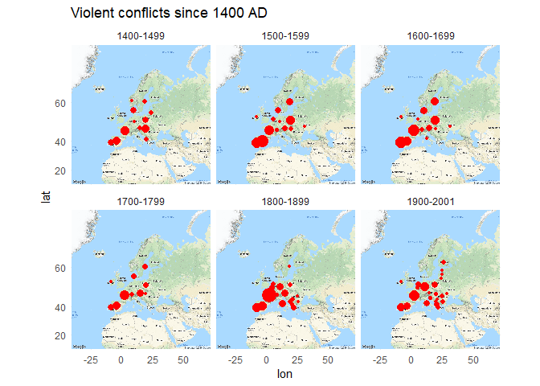

Data Analysis: Visualizing Global Violence Since 1400 A.D. with ggplot2 and Plotly
For this post, I wanted to look at how global violent conflict has changed over the past few centuries. According to Steven Pinker in his The Better Angels of Our Nature: Why Violence Has Declined, we’ve never lived in a safer, less-violent time than today. Are there data to support this?
I managed to find an interesting dataset of world violent conflicts that has been painstakingly put together by professor Peter Brecke of the University of Utrecht. You can find the data on the “data” tab of the University of Utrecht’s Centre for Global Economic History. http://www.cgeh.nl/data#conflict
Regarding the completeness of the conflict data, Prof. Brecke has this to say:
It must be understood that the Conflict Catalog within that Excel file is an unfinished product. Taking into consideration the data I have in my office that is not yet in the Conflict Catalog, I can easily believe the catalog growing by 20% or more.
There are certainly errors in the data, especially as we go back in time and into particular regions of the world. I have strived mightily to make these data as correct and accurate as I can, but there are undoubtedly errors of some form or other in the file. I tried to eliminate errors and resolve inconsistencies by comparing as many sources as I could find for every datapoint in the file. I believe the number of mistakes in terms of typos is quite small.
In short, it’s a work in progress. For example, the US Civil War is not included.
This dataset contains approximately 3708 conflicts (rows) and 18 variables of interest. Note however that there are many many NA values. Of course, dealing with data from 1400-present day, one would expect some data sources to not be reliable. In some cases it may even be impossible to calculate accurate numbers. With these caveats in mind, we’ll do our best.
Our Plan of Attack
We will start by cleaning up the data a little bit and adding some important missing country names to a new variable that we can then use to group our observations by. In order to do that, we will need to leverage another table that contains country names in many different languages: the countrycode package. Once we have those, it’s a simple inner_join to add the new columns (regions and continents) using our existing country names.
library(tidyverse)
library(countrycode)
library(stringr)
library(ggmap)
options(tibble.print_max = 50)
df <- read.csv('conflictcsv.csv', stringsAsFactors = FALSE)
df$Name <- tolower(df$Name)
names(df)
## [1] "Common.Name" "Name" "CountryCode"
## [4] "NumberActors" "MilFatalities" "TotalFatalities"
## [7] "StartYear" "StartMonth" "StartDay"
## [10] "EndYear" "EndMonth" "EndDay"
## [13] "Region" "Century" "Decade"
## [16] "DurationD" "DurationM" "DurationY"
#great little package that includes regex examples for extracting countries
codes <- tolower(countrycode::codelist$country.name.en)
#add these because they are not the standard country names but will represent geographic regions in our plots
codes = append(codes, c('england', 'burma','korea','zaire', 'crimea', 'milan', 'america', 'west indies',
'guiana', 'guatamala', 'palestine',
'soviet union', 'ussr', 'congo', 'britain', 'persia', 'us',
'holland', 'ceylon','sumatrans', 'transylvania', 'united provinces',
'scotland', 'algiers','florence', 'burgundy', 'bohemia', 'naples',
'burmese', 'zurich', 'aragon', 'sicily', 'siam', 'tibet', 'venice',
'mongols', 'german', 'swiss', 'castile', 'emperor', 'papal',
'british', 'boers', 'bengal', 'portuguese', 'moghuls', 'zulu') , after = length(codes))
#turn it into a DF for joining
cl <- codelist
#convert all names to lowercase
cl <- cl %>%
mutate_if(is.character, tolower)
#find name from description and add new column with name value. 430 missing this way
df <- df %>%
mutate(country = (str_extract(df$Name, paste(codes, collapse="|"))))
#need continent and region labels for plotting. Have to join from other dataframe.
df <- df %>%
rename('country.name.en' = country)%>%
inner_join(cl[,c('region','continent', 'country.name.en')], by='country.name.en')%>%
rename('country' = country.name.en)
Set up our maps with ggmap()
I don’t know why, but sometimes these don’t work the first time. If I run them again, however, they will work.
#Map of EU
world_map_eur <- get_map('Europe', zoom=3)%>%ggmap()
world_map_eur

Since the Google Maps API only allows 2500 geocoordinate queries per day, we will go old school and scrape the coordinates from this handy Google html table that lists the country name and the latitude and longitude. These coordinates will allow us to plot on a world map. Otherwise we could use the handy mutate_geocode() function from gmaps.
#COLLECT LATITUDE AND LONGITUDE DATA FROM WEB
#html_table is super useful because it will format a dataframe from an html table
library(rvest)
url <- 'https://developers.google.com/public-data/docs/canonical/countries_csv'
tab <- html_table(read_html(url))[[1]]
tab <- tab %>%
mutate(name = tolower(name))
#JOIN SCRAPED COORDS WITH DATA
#Now we have country, continent, region, and lat longitudes
df <- df %>%
rename('name' = country)%>%
inner_join(tab[,c('latitude','longitude','name')], by='name')
We have the data required for plotting, now we just need to compute some summary statistics to display. To start, let’s look at the number of conflicts around the world since 1400.
#Latitudes for regions and countries for plotting. READY TO PLOT!
lat_long_conf <- df %>%
group_by(name, region)%>%
summarize(long = mean(longitude, na.rm=T),
lat = mean(latitude, na.rm=T),
num_conflicts = n())
head(lat_long_conf)
## # A tibble: 6 x 5
## # Groups: name [6]
## name region long lat num_conflicts
## <chr> <chr> <dbl> <dbl> <int>
## 1 afghanistan southern asia 67.709953 33.93911 61
## 2 albania southern europe 20.168331 41.15333 10
## 3 algeria northern africa 1.659626 28.03389 11
## 4 angola middle africa 17.873887 -11.20269 15
## 5 argentina south america -63.616672 -38.41610 26
## 6 armenia western asia 45.038189 40.06910 1
We’re not done yet. We need a world map to plot on. We also need a dataframe with the latitude and longitude information. We obtain this using the maps library and the map_data() function that creates a dataframe with region and longitude and latitude information. We pass these into the call to geom_map().
library(maps)
world_map <- map_data('world')
head(world_map)
## long lat group order region subregion
## 1 -69.89912 12.45200 1 1 Aruba <NA>
## 2 -69.89571 12.42300 1 2 Aruba <NA>
## 3 -69.94219 12.43853 1 3 Aruba <NA>
## 4 -70.00415 12.50049 1 4 Aruba <NA>
## 5 -70.06612 12.54697 1 5 Aruba <NA>
## 6 -70.05088 12.59707 1 6 Aruba <NA>
Simply overlay these data on our ggplot world map. Notice the map=world_map and aes(map_id=region) arguments.
Let’s look at conflicts by region.
ggplot()+
geom_map(data=world_map, map=world_map,aes(x=long, y=lat,map_id = region),
fill="white", color="black")+
geom_point(data=lat_long_conf,
aes(long, lat, size=num_conflicts),color='red', alpha=.5)+
theme_minimal()+
labs(title='Violent conflicts since 1400 AD')+
guides(size=FALSE)+
labs(x='', y='')

From this we can see that Europe is a hotbed, along with modern day China, the Middle East, and Central America. Africa has had conflicts in almostevery country, though the total number of conflicts is dwarfed by Europe and China.
Conflicts over the centuries
Now we want to look more at the number of conflicts through the centuries. In order to do that we must turn our semi-continuous variable StartYear into a discrete variable with values for each century. To do this we will use the cut() function that takes two key arguments: the break values in the actual variable, and the labels for each break. Notice that there is one fewer label than break values.
#create copy of original df
df_cut <- df
df_cut$StartYear <- cut(df_cut$StartYear, breaks = c(1400, 1500, 1600, 1700, 1800, 1900, 2001),
labels = c('1400-1499', '1500-1599', '1600-1699', '1700-1799',
'1800-1899', '1900-2001'),
right=F, ordered_result = T)
df_cut %>%
select(Name, StartYear)%>%
head(5)
## Name StartYear
## 1 china (minority in hebei, shandong, anhui, jiangsu), 1400-02 1400-1499
## 2 hungary, 1401 1400-1499
## 3 russia-lithuania, 1401-04 1400-1499
## 4 mujapahit (india, civil war), 1401-06 1400-1499
## 5 china-japanese pirates (zhejiang), 1401 1400-1499
We will then look at the number of conflicts by each present day country.
#get conflicts by continent
year_conf <- df_cut %>%
group_by(StartYear, name, continent)%>%
summarize(long = mean(longitude, na.rm=T),
lat = mean(latitude, na.rm=T),
num_conflicts = n())
head(year_conf)
## # A tibble: 6 x 6
## # Groups: StartYear, name [6]
## StartYear name continent long lat num_conflicts
## <ord> <chr> <chr> <dbl> <dbl> <int>
## 1 1400-1499 afghanistan asia 67.709953 33.93911 2
## 2 1400-1499 albania europe 20.168331 41.15333 3
## 3 1400-1499 algeria africa 1.659626 28.03389 1
## 4 1400-1499 austria europe 14.550072 47.51623 3
## 5 1400-1499 benin africa 2.315834 9.30769 1
## 6 1400-1499 burkina faso africa -1.561593 12.23833 1
Now we take the computed numbers and overlay them, via ggplot, on our world map. To do this, we need to use the geom_map function and pass in our world_map as the data and as the map. Notice in the aes() function we pass in the map_id = region argument. After that, it’s like building any old ggplot2 chart.
ggplot()+
geom_map(data=world_map, map=world_map,aes(map_id = region),
fill="white", color="black")+
geom_point(data=year_conf,
aes(long, lat, size=num_conflicts),color='red', alpha=.5)+
theme_minimal()+
labs(title='Violent conflicts since 1400 AD')+
guides(size=FALSE)+
facet_wrap(~ StartYear)+
labs(x='', y='')

We see that before Europe expanded to the Americas there were very few violent conflicts outside of Europe (besides China). As Europeans arrived in North and South America, more conflicts arose. Interestingly, in the 17th century, fewer new conflicts occurred in the New World, though Russia and West Africa experienced conflicts. Then in the 18th century, mroe and more violence broke out in North and South America. In the 19th century, the Americas became a powder keg for military conflict. At the same time, Europe and Africa blew up. Finally in the 20th century we see a pretty even distribution of conflicts all over the map. The Middle East also seems to have grown more violent (as measured by number of conflicts).
Notice that the increase in conflicts over the centuries is probably due to better recording of conflicts, not simply because people are more violent.
If we want a better map, we can use our Google map and limit the area to Europe.
eu_conf <- year_conf %>%
filter(continent=='europe')
world_map_eur+
geom_point(data=eu_conf,
aes(long, lat, size=num_conflicts),color='red')+
theme_minimal()+
labs(title='Violent conflicts since 1400 AD')+
guides(size=FALSE)+
facet_wrap(~ StartYear)

It looks like the 19th century was a particularly bloody time in Europe, with the Napoleonic wars probably contributing to most of that.
Closer look: Conflicts in the 20th century
Let’s say we are interested in examining conflicts in the 20th century. We will do the same process for cutting and relabeling the dates.
df1 <- read.csv('conflictcsv.csv', stringsAsFactors = FALSE)
df1$Name <- tolower(df1$Name)
#great little package that includes regex examples for extracting countries
codes <- tolower(countrycode::codelist$country.name.en)
#FIRST CREATE A DF OF ONLY 1900+ EVENTS
#803 obs
df_1900 <- df1 %>%
filter(StartYear >= 1900)
#Have to use 1 fewer label than the breaks. so binned from 1990+
df_1900$StartYear <- cut(df_1900$StartYear,
breaks = c(1900,1910, 1920,1930,1940,1950,1960,1970,1980,1990,2001),
labels = c('1900-1909', '1910-1919', '1920-1929', '1930-1939',
'1940-1949', '1950-1959', '1960-1969', '1970-1979', '1980-1989',
'1990+'),
right=F, ordered_result = T)
head(df_1900$StartYear)
## [1] 1900-1909 1900-1909 1900-1909 1900-1909 1900-1909 1900-1909
## 10 Levels: 1900-1909 < 1910-1919 < 1920-1929 < 1930-1939 < ... < 1990+
We do the same thing again: use regular expressions to find matches from our vector of country names and then create a new column with the matched value.
#First extract names from the list of Name field
#430 missing this wway
df_1900 <- df_1900 %>%
mutate(country = (str_extract(df_1900$Name, paste(codes, collapse="|"))))
#need continent and region labels for plotting. Have to join from other dataframe.
df_1900 <- df_1900 %>%
rename('country.name.en' = country)%>%
inner_join(cl[,c('region','continent', 'country.name.en')], by='country.name.en')%>%
rename('country' = country.name.en)
#Now append long and lat from google
#Now we have country, continent, region, and lat longitudes
df_1900 <- df_1900 %>%
rename('name' = country)%>%
inner_join(tab[,c('latitude','longitude','name')], by='name')
If we want to look at continent conflict numbers in the 20th century, we simply group by country and StartYear.
#get conflicts by country
conf_1900 <- df_1900 %>%
group_by(StartYear, name)%>%
summarize(long = mean(longitude, na.rm=T),
lat = mean(latitude, na.rm=T),
num_conflicts = n())
head(conf_1900)
## # A tibble: 6 x 5
## # Groups: StartYear [1]
## StartYear name long lat num_conflicts
## <ord> <chr> <dbl> <dbl> <int>
## 1 1900-1909 angola 17.87389 -11.202692 1
## 2 1900-1909 brazil -51.92528 -14.235004 1
## 3 1900-1909 burundi 29.91889 -3.373056 2
## 4 1900-1909 cameroon 12.35472 7.369722 1
## 5 1900-1909 china 104.19540 35.861660 3
## 6 1900-1909 colombia -74.29733 4.570868 1
#20th Century Conflicts
ggplot()+
geom_map(data=world_map, map=world_map,aes(map_id = region),
fill="white", color="black")+
geom_point(data=conf_1900,
aes(long, lat, size=num_conflicts),color='red', alpha=.5)+
theme_minimal()+
labs(title='Violent Conflicts in the 20th Century')+
guides(size=FALSE)+
facet_wrap(~ StartYear)+
labs(x='', y='')

This chart has a wealth of information. Starting in the first decade we see most conflicts in Europe, central Africa, and Russia. Then WWI breaks out in Europe and Northern Africa. At the same time, there’s a civil war in China and Russia that will eventually leave the Communists in power and will influence international geopolitics for the next 70+ years. Note that in 1911 the Republic of China was established, ending the millenia of rule by emperor. In the 1920s we see relative calm, except in China where civil war broke out in the late 1920s and led to the KMT fleeing to Taiwan and the Communists ruling Chinese politics until the present day.
The outbreak of WWII is reflected in the 1930s by a fairly global distribution of conflicts. The 1950s saw the Korean war. At this point the Cold War was at its peak: you can see the emergence of the “Third World” in Africa–countries that were aligned with neither the USA nor the Soviet Union. Lots of conflicts cropped up in Africa at this time. In the 1970s East Africa became a hotbed, and unfortunately I don’t know much about these events. Could it be related to the change of Rhodesia to Zimbabwe? It might be.
The 1980s see an explosion of conflict in Central America: this is probably related to the USA’s involvement in the region’s politics, including the Iran-Contra scandal that Reagan resided over. In essence the US was arming the Contras in Nicaragua using money from arms sales to Iran, which at the time, was under embargo for the taking of US hostages in 1979. Check out the Ben Affleck movie Argo if you’re interested in learning more about the event (or read a book!). Finally, the 1990s saw an explosion of conflict predominantly in the Middle East and what appears to be India. Unfortunately I don’t know enough about Indian history to explain what was happening here.
So we’ve seen the number of conflicts, what about the total deaths from these conflicts?
library(ggrepel)
# Take top 30 to plot names
df_conflicts <- df %>%
filter(!is.na(TotalFatalities))%>%
filter(!Common.Name %in% c('', '?'))%>%
select(Common.Name, latitude, longitude, TotalFatalities)%>%
arrange(desc(TotalFatalities))%>%
slice(1:50)
head(cbind(df_conflicts$Common.Name, df_conflicts$TotalFatalities))
## [,1] [,2]
## [1,] "Genocide of Jews" "6000000"
## [2,] "Taiping Rebellion" "2000000"
## [3,] "War of the Spanish Revolution" "2000000"
## [4,] "Sino-Japanese War" "2000000"
## [5,] "Politicide of defeated" "1900000"
## [6,] "Politicide of opponents" "1900000"
ggplot()+
geom_map(data=world_map, map=world_map,aes(map_id = region),
fill="white", color="light grey")+
geom_text_repel(data=df_conflicts,
aes(longitude, latitude, label=Common.Name, size=TotalFatalities),
segment.alpha = .6, segment.color = 'black',
color='red')+
expand_limits(x=-80, y=-30)+
theme_minimal()+
labs(title='Name and Location of Major Violent Conflicts since 1400 AD')+
guides(size=FALSE)

We can see the genocide of the Jews, the Spanish Revolution, the Chinese Civil War, and a few other conflicts make up the worst conflicts in terms of total deaths. It’s interesting to see the Indonesia genocide of Chinese and Communists, which started under Sukarno and led to the ascension of Suharto, who would control Indonesia for the next 30 years. I don’t think this event gets enough attention in world history. And again, it shows how the Cold War shaped the 20th century.
Using regular expressions to find attackers and defenders in conflicts
One question we might ask is, Which countries seem to attack other countries? And, Which countries have lots of domestic conflicts?
To do this (and the method is not perfect, but good enough), we need to use regular expressions to extract out the names from the ‘Name’ column. A useful bit of info from the data curator’s website says that if there was an aggressor, it is listed on the left side of the hyphen and the country/nation/state under attack is on the right. So for example, element three says that Russia attacked Lithuania in 1401. Here’s a sample of the names:
head(df$Name)
## [1] "china (minority in hebei, shandong, anhui, jiangsu), 1400-02"
## [2] "hungary, 1401"
## [3] "russia-lithuania, 1401-04"
## [4] "mujapahit (india, civil war), 1401-06"
## [5] "china-japanese pirates (zhejiang), 1401"
## [6] "spain-canary islands, 1402-22"
You can already see some problems: not all elements have attackers and defenders (some are domestic conflicts). Also, if you look carefully, there are two hyphens: one for the countries and another used in the date. So we have to be careful about which hyphen we are extracting around.
With a bit of trial and error (and StackOverflow), I managed to come up with two regexes that work pretty well to capture the attacker and defender.
Basically the first regex is going to capture any characters in the range a-z up until it hits a non-alphabetic symbol, i.e., () or -.
The second uses what’s called a “lookaround” and character classes (\w). It is looking for one or more word characters (\w+), preceeded by a hyphen and a word character. It might be easier to understand if you read it from right to left.
df <- df %>%
mutate(attacker = str_extract(df$Name,'[a-z]+'))
df <- df %>%
mutate(defender = str_extract(df$Name, '(?<=\\w-)\\w+'))
head(cbind(df$attacker, df$defender))
## [,1] [,2]
## [1,] "china" "02"
## [2,] "hungary" NA
## [3,] "russia" "lithuania"
## [4,] "mujapahit" "06"
## [5,] "china" "japanese"
## [6,] "spain" "canary"
The problem we have now is that some conflicts don’t have foreign defenders. So we will need to first look for any NA values or numeric values that were incorrectly extracted from our regex and convert them to the string ‘domestic.’
One useful technique is using lapply when you want to replace one value in one particular column or group of columns. If your function is more complicated than a one-liner, you can write the function then use lapply to target the particular column of interest.
First we replace NA values with ‘domestic.’ Then we replace digits with ‘domestic’ (indicating there was no 2nd country to extract a name from).
#HOW TO REPLACE NAs IN JUST ONE COLLUMN ? lapply
df$defender <- lapply(df[,'defender'], function(x){replace(x, is.na(x), 'domestic')})
#easier to just name them domestic
check_char <- function(x){
if (str_detect(x, '\\d')==TRUE){
x <- 'domestic'
} else{
x
}
}
#use sapply to avoid getting a list for the column
df$defender <- sapply(df[,'defender'], check_char)
#Now this looks much better
head(cbind(df$attacker, df$defender))
## [,1] [,2]
## [1,] "china" "domestic"
## [2,] "hungary" "domestic"
## [3,] "russia" "lithuania"
## [4,] "mujapahit" "domestic"
## [5,] "china" "japanese"
## [6,] "spain" "canary"
#Another useful way to replace specific values: str_replace_all()
#df$defender <- str_replace_all(df$defender, 'None', 'domestic')
Which countries have the most domestic conflicts?
df %>%
count(attacker, defender, sort=T)%>%
head(5)
## # A tibble: 5 x 3
## attacker defender n
## <chr> <chr> <int>
## 1 china domestic 320
## 2 france domestic 62
## 3 japan domestic 62
## 4 spain domestic 54
## 5 turkey domestic 48
What about which countries have the biggest rivalries, measured in terms of the number of conflicts between them? And in which centuries did these rivalries take place?
df %>%
filter(defender != 'domestic')%>%
unite(title, 'attacker', 'defender', sep=' vs.')%>%
count(title, sort=T)%>%
slice(1:40)%>%
ggplot(aes(reorder(title,n),n, fill=n))+
geom_col()+
coord_flip()+
theme(plot.subtitle = element_text(vjust = 1),
plot.caption = element_text(vjust = 1),
axis.text.y = element_text(size = 6),
plot.title = element_text(size = 11)) +labs(x = "Warring Countries", y = "# of Conflicts",
fill = "Century")+
scale_fill_distiller(palette = 'Spectral', direction = -1)+
theme_minimal()+
guides(fill=FALSE) +
labs(title='Most violent rivalries by # conflicts')

We can see China and the Tartars have had many conflicts over the years. We can also understand why there is hostility between Japan and China and France and England. There’s definitely some lesser-known conflicts that would be worth learning more about, for example Oman and Portugal or Russia and the Buryats, which are a group of people indigenous to Siberia.
Let’s see how the rankings change when we look at total fatalities. Keep in mind we don’t have a lot of data on total fatalities. These rankings are only based on the non-NA values in the dataset.
#Same thing but by total fatalities
df %>%
filter(!is.na(TotalFatalities))%>%
filter(defender != 'domestic')%>%
unite(title, 'attacker', 'defender', sep=' vs.')%>%
group_by(title)%>%
summarize(total_deaths = sum(TotalFatalities))%>%
slice(1:40)%>%
ggplot(aes(reorder(title,total_deaths),total_deaths, fill=total_deaths))+
geom_col()+
coord_flip()+
theme(plot.subtitle = element_text(vjust = 1),
plot.caption = element_text(vjust = 1),
axis.text.y = element_text(size = 6),
plot.title = element_text(size = 11)) +labs(x = "Warring Countries", y = "# of Deaths",
fill = "Century")+
scale_fill_distiller(palette = 'Spectral', direction = -1)+
theme_minimal()+
guides(fill=FALSE) +
labs(title='Most violent rivalries by # deaths')

Given our limited death data, we can see the effects of the Napoleonic wars on Europe with Austria and France being intense rivals. Lesser-known (to me at least) is China and the Dzoungars. According to Wikipedia, this was a mass genocide of Buddhist people living in Mongolia under the Manchu dynasty.
What about domestic conflicts: revolutions, civil wars, genocides, rebellions, etc.?
df %>%
filter(defender == 'domestic')%>%
filter(attacker != 'south')%>%
count(attacker,defender, sort=T)%>%
slice(1:40)%>%
ggplot(aes(reorder(attacker,n),n, fill=n))+
geom_col()+
coord_flip() + theme(plot.subtitle = element_text(vjust = 1),
plot.caption = element_text(vjust = 1),
axis.text.y = element_text(size = 7),
plot.title = element_text(size = 11)) +
labs(x = "Country", y = "# of Domestic Conflicts")+
scale_fill_distiller(palette = 'Spectral', direction = -1)+
theme_minimal()+
guides(fill=FALSE)
China and Japan have dealt with many domestic conflicts over the years.
Maybe we’re interested in the countries whose conflicts have produced the most deaths. Keep in mind our regex was not perfect, so some of these results should be taken with a grain of salt.
#total deaths (all types)
df %>%
filter(!attacker %in% c('south', 'north'))%>%
filter(!is.na(TotalFatalities))%>%
count(TotalFatalities,attacker,defender,StartYear, sort=T)%>%
filter(TotalFatalities > 100000)%>%
ggplot(aes(reorder(attacker,TotalFatalities),TotalFatalities, fill=StartYear))+
geom_col()+
coord_flip() + theme(plot.subtitle = element_text(vjust = 1),
plot.caption = element_text(vjust = 1),
axis.text.y = element_text(size = 7),
plot.title = element_text(size = 11)) +labs(x = "Country", y = "Total Deaths (all types)",
fill = "Century")+
scale_y_continuous(labels = scales::comma)+
theme_minimal()

The reason Japan and Germany are listed so high is because they are being counted as “attackers” in WWII, which explains the massive amount of deaths in the 20th century. It’s interesting to see that 400 years ago, Denmark was a pretty violent place, and so was France a couple hundred years ago.
The deadliest domestic conflicts?
#total deaths (domestic) : keep in mind we don't have numbers for a lot o conflicts.
df %>%
filter(defender == 'domestic')%>%
filter(!attacker %in% c('south', 'north', 'el'))%>%
filter(!is.na(TotalFatalities))%>%
group_by(attacker, defender, StartYear)%>%
summarize(cts = sum(TotalFatalities))%>%
filter(cts > 70000)%>%
slice(1:40)%>%
ggplot(aes(reorder(attacker,cts),cts, fill=StartYear))+
geom_col()+
coord_flip() + theme(plot.subtitle = element_text(vjust = 1),
plot.caption = element_text(vjust = 1),
axis.text.x = element_text(size = 5),
plot.title = element_text(size = 11))+
labs(x = "Country", y = "Total Deaths",
fill = "Century", title= 'Total Deaths in Domestic Conflicts')+
scale_y_continuous(labels = scales::comma)+
theme_minimal()
Poland had some domestic conflicts several hundred years ago, and same with the Moghuls in present day India. You can also see Portugal’s violent role in the European colonization of Asia in the 15-17th centuries.
Using Plotly to make Interactive Visualizations
To use plotly with ggplot2 is easy: you just create your normal ggplot object, save it to a variable, then pass it to ggplotly(). Voila, you have an interactive plot that can be scrolled through, zoomed in on, and filtered on using different variables.
I want to look at the number of conflicts over time for each continent. We’ll use lubridate’s ymd() and floor_date() to aggregate into 10 year blocks.
The truncated parameter of ymd() is a very useful in that it checks for incomplete dates. Notice that it assumes January 1st for each year. That’s good enough for us (sorry history buffs). Once we have the date integers converted into datetime objects, we can then use the floor_date() function to aggregate them.
library(lubridate)
yr_conflicts <- df %>%
mutate(StartYear = ymd(StartYear, truncated = 2))%>%
mutate(StartYear = floor_date(StartYear, unit = '10 years'))%>%
group_by(continent, StartYear)%>%
summarize(cts = n())%>%
ggplot(aes(StartYear, cts, group=continent, color=continent))+
geom_line()+
theme_minimal()
yr_conflicts

To show off plotly, I’ll do the same plot but render it using plotly with the ggplotly() function. Take a minute to play around with the filtering (click on the legend to deactivate a category).
I’m not sure why, but twice RStudio has crashed while I’ve been playing around with the interactive graph
yr_conflicts <- df %>%
mutate(StartYear = ymd(StartYear, truncated = 2))%>%
mutate(StartYear = floor_date(StartYear, unit = '10 years'))%>%
group_by(continent, StartYear)%>%
summarize(cts = n())%>%
ggplot(aes(StartYear, cts, group=continent, color=continent))+
geom_line()+
labs(x='Year of Conflict', y='Number of Conflicts')+
theme_minimal()
ggplotly(yr_conflicts)
Finally, can we recreate our world map graph using plotly? Let’s try. Note: Rendering to Plotly is super computationally intensive and I keep getting an error: “Cannot allocate vector of size 2.3 gb.” My computer sounds like it’s about to go into shock.
Note: I’ve managed to at least decrease the size of the original map data frame from 99000 obs (which was too big to use Plotly with) to simply a few hundred. But now the underlying map is not displaying, though you can see the outline of the continents from the conflict locations.
So that’s it for now. The takeaway here is that for normal plotting needs, Plotly works great. But if you have big dataframes of coordinates for world maps, you might need to figure out another way to make interactive graphs.
Note 2: Currently the Plotly graphs produced locally are not displaying on the website. I’m going to keep searching for a solution to this problem… Check back soon for the updated version with interactive charts.
world_map_small <- world_map %>%
mutate(region = tolower(region))%>%
filter(region %in% df$name)%>%
group_by(region)%>%
slice(1)
label_map <- ggplot()+
geom_map(data=world_map_small, map=world_map,aes(map_id = region),
fill="white", color="black")+
geom_point(data=lat_long_conf,
aes(long, lat, size=num_conflicts),color='red', alpha=.5)+
theme_minimal()+
labs(title='Violent conflicts since 1400 AD')+
guides(size=FALSE)+
labs(x='', y='')
ggplotly(label_map)
plot1 <- ggplotly(yr_conflicts)
options(browser = 'false')
ch_link = api_create(plot1, filename = "timeline")
ch_link
Finally, can we recreate our world map graph using plotly? Let’s try. Note: Rendering to Plotly is super computationally intensive and I keep getting an error: “Cannot allocate vector of size 2.3 gb.” My computer sounds like it’s about to go into shock.
I’ve managed to at least decrease the size of the original map data frame from 99000 obs (which was too big to use Plotly with) to simply a few hundred. But now the underlying map is not displaying, though you can see the outline of the continents from the conflict locations.
So that’s it for now. The takeaway here is that for normal plotting needs, Plotly works great. But if you have big dataframes of coordinates for world maps, you might need to figure out another way to make interactive graphs.
world_map_small <- world_map %>%
mutate(region = tolower(region))%>%
filter(region %in% df$name)%>%
group_by(region)%>%
slice(1)
label_map <- ggplot()+
geom_map(data=world_map_small, map=world_map,aes(map_id = region),
fill="white", color="black")+
geom_point(data=lat_long_conf,
aes(long, lat, size=num_conflicts),color='red', alpha=.5)+
theme_minimal()+
labs(title='Violent conflicts since 1400 AD')+
guides(size=FALSE)+
labs(x='', y='')
pltly <- ggplotly(label_map)
chart_link = api_create(pltly, filename="worldmap")
chart_link